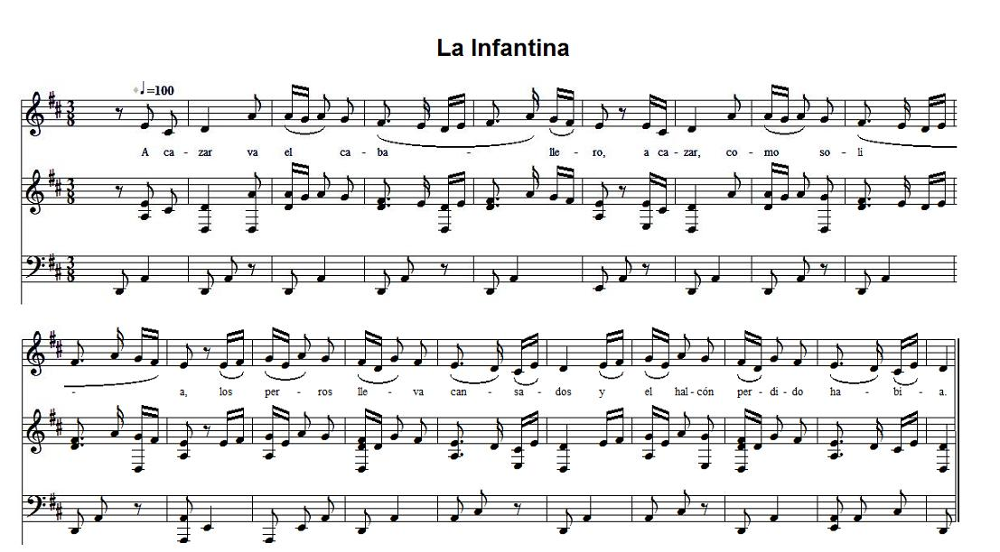
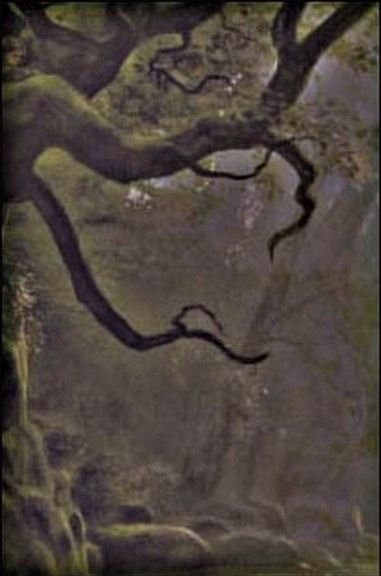

|
CASTILLAN LA INFANTINA (Version 1) 1. A cazar va el caballero, --a cazar, como solía, los perros lleva cansados --y el halcón perdido había. [1] 2. ¿Dónde le cogió la noche?, --y en una oscura montaña, [donde cae la nieve a copos, --y el agua menuda y fina,] donde canta la leona --y el león le respondía, 3. donde no hay hombre del mundo, --ni criatura nacida. Arrimárase a un roble, --alto era a la maravilla; 4. el tronco tenía de oro, --las ramas de plata fina. En el pimpollo más alto, --viera estar una infantina, [5.] con peine de oro en sus manos --que los cabellos partía, entre su pelo y el peine --comparaciones no había, ¡cuántas veces a los hombres --de cadena servirían!; 6. cabellos de su cabeza --todo aquel roble cubrían, [su nariz enafilada, --su cara rosa encendida,] los ojos de la su cara --la montaña esclarecían. [7. los dientes de la su boca --de aljófar y perlas finas,] -¡Oh válgame Dios del cielo! --¿qué es esto que yo veía?- 8. Apuntola con la lanza --por ver si era cosa viva. -No te espantes, caballero, --ni tengas tal pavoría, 9. que yo persona me soy, --como tú fui yo nacida. Siete hadas me fadaron --en haldas de mi madrina, 10. que anduviese siete años --en esta oscura montiña, comiendo las hierbas verdes, --bebiendo las aguas frías. [2] 11. Hoy se cumplen los siete años, --mañana el postrero día. Por tu vida, el caballero, --llévame en tu compañía : 12. o llévame por mujer, --o llévame por amiga, o llévame por esclava, --que a todo me allanaría. 13. -Madre vieja tengo en casa, --su consejo tomaría. -¡Malhaya sea el caballero --que por su madre se guía!- 14. El consejo de la madre, --que la tome por amiga. Cuando volvió el caballero, --no encontró roble ni niña. 15. Siete duques la llevaban --y un rey, que más valía: su padre y sus siete hermanos, --que en su busquedad venían. [3] |
SEFARADE A KASAR 1. A kasar va el kabayero A kasar komo salia Los perros iban kasando I el barko solito iba [1] [et le bateau navigait tout seul] 2. Ande los kayo la noche En una oskura montanya Ande kae la nyeve a kopos I korria la agua fria 3. Ai s'enkontraba un roble Alto era una maravya 4. Los ojas eran de oro La rais de plata fina I en el pimpoyo mas arriba Enkontraba una infantita 6. Kabeyos de su kabesa Akel roble kubyeran Los ojos de su kara la montanya esklaresian 7. Valgame Dyos del sielo k'era eso que yo via ? 8. Si son anjeles del sielo o es persona nasida Sont-ce des anges du ciel? ou un être né d'un humain? 9. Persona soy, kabayero, Komo ti fui yo nasida Estas fadas me fadaron en alda de una mi tia 10. Ke me kede syete anyos i en esta oskura montanya. [2] 11. Yeveme en su kompanya 12. por mujer o por amiga 13. Ombre ke a tal prenda deja Ke kastigo le daria ? Ke le aten pyez en manos i le rongjen por la via! [4] ... 13. Homme qui lâches une telle proie, Quel châtiment t'infligera-t-on? Qu'on lui coupe les pieds et les mains Et qu'on les promène par les rues! [4] ... |
FRANCAIS LA PETITE ENFANT (Version 1) 1. A la chasse s'en va le seigneur, --à la chasse comme il en avait l'habitude. Ses chiens étaient fatigués, --Quant à son faucon, il l'avait perdu. [1] 2. - Où la nuit l'a-t-elle surpris? Eh bien, sur une sombre montagne [où tombe la neige à gros flocons --et la pluie menue et fine] où la lionne rugit --et le lion lui répondait. 3. La où il n'y a ni homme de ce monde --ni créature née d'un humain. Il s'approche d'un rouvre --d'une hauteur surprenante. 4. Son tronc, c'était de l'or --et ses branches de l'argent fin Et sur la plus haute branche N'a-t-il pas vu, assise, une petite enfant, [5.] un peigne d'or à la main qui divisait sa chevelure? Ces cheveux et ce peigne étaient incomparables! -- Combien de fois allaient-ils servir A enchaîner les hommes! 6. Son ample chevelure recouvrait tout ce chêne, [son nez aquilin - son visage empourpré] avec des yeux dont la clarté illuminait toute la montagne. [7. Dans sa bouche, les dents étaient des diamants et des perles fines!] - Que Dieu me vienne en aide! Qu'est-ce donc que je vois? 8. Il pointa sur elle sa lance pour voir si c'était un être vivant. - Ne t'effraye point, seigneur! Cesse d'avoir peur à ce point! 9. Je suis un être de chair, seigneur, --Comme toi je fus enfantée. Sept [ce sont des] fées [qui] m'ont jeté un sort, C'est la faute de ma marraine, [tante] 10. Je dois errer [rester] pendant sept ans sur cette sombre montagne, Me nourrissant d'herbes vertes et buvant l'eau fraîche des ruisseaux. [2] 11. Aujourd'hui s'achèvent les sept années. -- C'est demain le dernier jour. Pour la vie, seigneur, Fais de moi ta compagne: 12. Fais de moi ta femme, ou fais de moi ta maîtresse, ou fais de moi ton esclave: Je me soumettrai à ton bon-vouloir. 13.- Ma vieille mère est à la maison: Je cours lui demander son avis...- -- Malheur à l'homme Qui s'en remet aux conseils de sa mère! 14. Le conseil que lui donna sa mère Fut d'en faire sa maîtresse... Quand le seigneur s'en revint, il ne trouva ni le chêne, ni la fille. 15. Sept duc l'avaient enlevée, Ainsi qu'un roi, qui plus est: c'était son père et ses sept frères qui étaient allés à sa recherche. [3] |
|
[1] La première strophe est commune à ce chant et à La muerte ocultada" (la version espagnole du "Roi Renaud"). [2] La escena del encuentro del caballero con la infantina tiene, sorprendentemente, un paralelo en la historiografía medieval. Cuando Sancho IV, en la segunda mitad del siglo XIII, patrocina una compilación histórica sobre la mayor empresa caballleresca de la Cristiandad occidental, la conquista de Tierra Santa, basada en textos franceses, esa gesta de los caballeros de Dios se había teñido de elementos míticos procedentes de la tradición folklórica pre-cristiana. La historia de El caballero del cisne, con que se prologa la de Godofredo de Bouillon, comienza contando cómo el conde Eustacio, yendo de caza, por un monte tan temeroso que ningún otro hombre del mundo osaba entrar en él, descubre, escondida en una encina hueca, una infanta muy hermosa, grande y de buen donaire, que piensa ser el diablo o cosa que se le pareciera. Aunque el conde, lejos de dejar a la Infanta sola en el monte, la envía con un escudero a casa de su madre, las dos escenas es claro que entroncan (aunque ambas se desvíen de él) con el modelo de leyenda que se suele llamar Melusiniana (por tener como manifestación más famosa Le Livre de Mélusine de Jean dArras), donde la mujer hallada en el bosque es realmente un ser sobrenatural. ----El romance se documenta ya a mediados del siglo XVI, en el primer Cancionero de Romances impreso (en Amberes, c. 1248), con una estructura y una expresión poética muy similar a esta mi versión representativa de la tradición oral del siglo XX. El desenlace original sólo se conservó en las ramas sefardí y catalana del Romancero y en las más antiguas versiones conocidas de tradición portuguesa (del s. XVII y del s. XIX). |
[1] La première strophe est commune à ce chant et à La muerte ocultada" (la version espagnole du "Roi Renaud"). [2] Aussi surprenant que cela puisse paraître, la scène de la rencontre du seigneur et de la "petite enfant" a un pendant dans l'histoire de Moyen-âge. Lorsque Sanche IV, dans le seconde moitié du 13èmé siècle fit composer un recueil historique sur la principale entreprise chevaleresque de la chrétienté occidentale, la conquête de la Terre sainte, à partir de textes français, cette geste des chevaliers de Dieu s'était trouvée mâtinée d'éléments mythiques relevant de traditions populaires préchrétiennes. L'histoire du "Chevalier au cygne", qui fait suite à celle de Godefroy de Bouillon, commence par narrer comment le comte Eustache, revenant de la chasse en passant par une montagne si redoutable qu'aucun homme au monde n'avait osé s'y aventurer, découvrit cachée au creux d'un chêne vert, une fillette très belle, grande et avenante qu'il pensa être le diable, car c'est ainsi qu'il l'imaginait. Même si le comte, loin de laisser l'enfant seule dans la montagne, l'envoya, escortée d'un écuyer, chez sa mère, il est évident que les deux scènes coïncident (bien qu'elles s'en séparent toutes les deux) avec le "modèle" de la légende qu'on a coutume d'intituler "Mélusine" (comme elle est désignée dans l'ouvrage le plus fameux, le "Livre de Mélusine" de Jean d'Arras), où la fille trouvée dans le bois est réellement un être surnaturel. Le "romance" a été consigné par écrit dès la moitié du 16ème siècle dans le premier "Cancionero de Romances" (recueil de ballades) jamais imprimé (à Amberes, vers 1248): la structure et l'expression poétique ressemblent fort à celles de ma version issue de la tradition orale du 20ème siècle. Le dénouement original ne s'est conservé que dans les branches séfarade et catalane du "Romancero" et dans les plus anciennes versions connues de la tradition portugaise (des 17ème et 19ème siècles. |
|
CASTILLAN LA INFANTINA (version 2) 1. La mañana de San Juan, --tres horas antes del día, me salí a pasear --por una arboleda arriba; 2. en medio de la arboleda --un rico ciprés había, el tronco tiene de oro, --las ramas de plata fina. 3. En el pimpollo más alto, --vide sentada una niña; mata de cabello tiene --que todo el ciprés cubría. 4. Estándoselo peinando, --la niña quedó dormida. La despertó un ruiseñor --con el canto que traía: 5. -Despiértate, dama hermosa, --despierta, rosa florida; una dama como vos --no es razón esté dormida. 6. Con esto, quédate, adiós, --claro lucero del día, con esto, quédate, adiós, --que ésta va por despedida. |
 |
FRANCAIS LA PETITE ENFANT (Version 2) 1. Le matin de la Saint-Jean, Trois heures avant le jour Je sortis me promener La haut dans un bosquet. 2. Au milieu du bosquet Il y avait un riche cyprès Dont le tronc était d'or et les ramures d'argent fin. 3. Sur la plus haute branche était assise une jeune fille. Elle a une touffe de cheveux qui couvrent tout le cyprès. 4. Elle était occupée à les peigner quand elle s'est endormie. L'a réveillée un rossignol Par le chant qu'il modulait. 5. Réveillez-vous, la belle dame, Réveillez-vous, rose fleurie, Lorsque comme vous l'on est belle Il n'y a pas lieu de dormir. 6. Sur ce, restez, moi je vous quitte, Luminaire éclatant du jour! Sur ce, restez, moi je vous quitte. Ces mots sont en guise d'adieu. [3] |
|
[3] En la tradición aragonesa (y en alguna versión catalana) la escena del encuentro del caballero con la dama que peina su cabellera en un árbol fantástico se ha transformado en una canción lírica de ronda: En Burgos, el tema concluye con el rechazo de la petición de la infantina (como sustitución de la ida a consultar a la madre). Pero lo más común en la tradición del siglo XX es incorporar la escena del encuentro con la infantina encaramada en su árbol al tema de El caballero burlado, a partir del motivo en este segundo romance de la cortés pregunta del caballero respecto a si prefiere las ancas o la silla. El romance, así estructurado, se extendió por toda la tradición en lengua portuguesa, incluidas las islas atlánticas y Brasil, así como por el Norte y Occidente de España (Galicia, Asturias, Santander, León, Zamora y Extremadura) y por Canarias y Venezuela. El éxito de la fusión se manifiesta además en esporádicos intentos de continuar el romance de La Infantina propio de la tradición aragonesa (la ronda arriba citada) o el propio de las comunidades judeo-españolas de Marruecos con los episodios de El caballero burlado. Dado que los dos romances así combinados desarrollaban la temática de la ocasión perdida, el resultado es una narración coherente (no así cuando adicionalmente se altera el desenlace incorporando la anagnórisis del romance de La hermana cautiva). |
[3] Dans la tradition aragonaise (et dans quelques versions catalanes), la scène de la rencontre du seigneur et de la dame qui peigne sa chevelure, perchée sur un arbre fantastique, s'est transformée en ronde lyrique. A Burgos le thème se termine par le rejet de la demande de la "petite enfant" (qui se substitue au recours aux conseils de la mère). Mais la formule la plus courante dans la tradition d'aujourd'hui combine le scène de la rencontre avec l'"enfant" perchée sur son arbre et l'histoire du "Seigneur berné", à partir du moment où, dans ce second récit, le juge demande au seigneur en question s'il préfère la croupe ou la selle. Le "romance" sous cette forme s'est étendu à tout le domaine de langue portugaise, y compris les Açores et le Brésil, ainsi que le nord et l'ouest de l'Espagne (la Galice, les Asturies, Santander, le León, Zamora et l'Estrémadure), ainsi que les Canaries et le Venezuela. En outre le succès de cet amalgame se manifeste, ici et là, par des tentatives de donner une suite au "romance", comme c'est le cas dans la tradition aragonaise (la ronde ci-dessus) ou dans celle des communautés judéo-espagnoles du Maroc qui comportent l'épisode du "seigneur berné". Du fait que les deux "romances" ainsi amalgamés développaient le thème de l'occasion manquée, le résultat est un récit cohérent. Ce n'est pas le cas, lorsqu'en plus, le dénouement est modifié pour inclure la scène de la reconnaissance tirée du "romance" de la "Sur captive". |
|
CASTILLAN FRAGMENTOS I Cavallero que tal pierde --grande pena merecía, el mesmo se es el alcalde, --el mesmo se es justicia: que le corten pies y manos --e le cuelguen de una enzina, [4] II Dins França partí la infanta, --ben calçada i ben vestida, i se nanava a París --que pare i mare tenia, [5] III té la soqueta daurada, --la ramareta dor fi i amb la seua cabeiera --cobria lo romaní, [6] IV Tate, tate. cavalhero, --no fagáis tal vilania, que soy hija del rey de Francia, --de la reina Constantina, |
FRANCAIS FRAGMENTS I Seigneur qui perds tant --grand peine mérite, de même que le juge, --de même le justice: qu'on lui coupe les pieds et les mains --et les accroche à une enseigne, [4] II Pour la France est partie l'enfant, --bien chaussée et bien vêtue, et elle se rendait à Paris --pour retrouver son père et sa mère, [5] III Dont la souche était dorée --et la ramure d'or fin et avec sa chevelure --elle couvrait tout le romarin, [6] IV Tout doux, tout doux, Seigneur --ne fais pas une chose si vilaine, Je suis la fille du roi de France, --et de la reine Constantine, [7] |
|
[4] Es curioso observar cómo esta fusión de La Infantina y de El caballero burlado había sido preludiada por repetidos intercambios de motivos narrativos y de fórmulas discursivas entre uno y otro romance: En la versión juglaresca de El caballero burlado arreglada por Rodrigo de Reinosa, que se publicó en un pliego suelto del siglo XVI, se incluye el motivo narrativo de carácter formulaico de la autosentencia por desesperación: FRAGMENTO I que era propio de La Infantina, pues se halla en la versión del Cancionero de romances de Amberes, 1550, en la judeo-portuguesa de 1683 y en la tradición sefardí de Marruecos del siglo XX. De otra parte, en la tradición catalana de los siglos XIX y XX de El Rosellón y de Ibiza y Formentera de este mismo romance de El caballero burlado, cuyas versiones, muy conservadoras, comienzan, de conformidad con las versiones antiguas, FRAGMENTO II [6] la doncella espera compañía para su viaje en un árbol (un romaní), que FRAGMENTO III [7] motivo, que resulta extraño en este contexto, y que es claramente procedente de La Infantina. A su vez, en una versión judeo- portuguesa de 1683 de La Infantina, se incluyen los versos, esenciales en la trama de El caballero burlado: FRAGMENTO IV como introducción a la revelación del hado. La convivencia de unos romances con otros en la memoria de los habituales usuarios de ese saber poético tradicional ha sido, lo mismo en tiempos lejanos que lo es en los cercanos, fuente de innovaciones textuales más o menos acertadas. Autor: Diego Catalán |
[4] Il est curieux d'observer comment cette fusion de la "Petite enfant" et du "Seigneur berné" avait été annoncée par des échanges répétés de motifs narratifs et de formules discursives entre l'un et l'autre romance. Dans la version destinée aux jongleurs du "Seigneur berné", composée par Rodrigue de Reynosa, et publiée sous forme de feuille volante au 16ème siècle, on trouve un nouveau motif: une formulette d'auto-condamnation sous l'effet du désespoir: FRAGMENT I [5] Elle était propre à la "Petite enfant", puis on la trouve dans la version du "Florilège de ballades d'Amberes" de 1550, dans la version judéo-portugaise de 1683 et dans la tradition séfarade du Maroc du 20ème siècle. D'autre part, dans la tradition catalane des 19 et 20ème siècles du Roussillon et d'Ibiza et Formentera, ce même "romance" du "Seigneur berné" se présente dans des versions plus conservatrices qui reprennent les formulations les plus anciennes: FRAGMENT II [6] La demoiselle attend ses compagnons de voyage sur un arbuste "de romarin" dont FRAGMENT III [7] Un motif qui, de toute évidence, n'a rien à voir ici et qui vient de "La petite enfant". A son tour, une version judéo-portugaise de 1683 de la "Petite enfant" incorpore ces vers essentiels à l'intrigue du "Seigneur berné": FRAGMENT IV Ils servent d'introduction au dévoilement du destin. La cohabitation de certain "romances" avec d'autres dans la mémoire des détenteurs habituels de ce savoir poétique traditionnel a été, autrefois tout comme aujourd'hui, la source d'innovations plus ou moins pertinentes. |